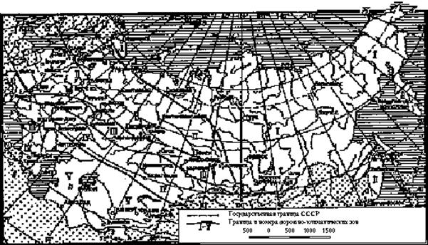

Строительные нормы и правила
Внутрихозяйственные
автомобильные дороги
в колхозах, совхозах и других
сельскохозяйственных предприятиях и организациях
СНиП 2.05.11-83
ГОСУДАРСТВЕННЫЙ КОМИТЕТ СССР ПО ДЕЛАМ СТРОИТЕЛЬСТВА
Москва 1984
Разработаны Союзпромтрансниипроектом Госстроя СССР (руководитель темы: С. Д. Чубаров, исполнители: В. И. Поляков, Н. И. Провоторов, В. С. Порожняков, Б.Н. Павлов); с участием: Главного управления капитального строительства, Главного управления землепользования и землеустройства и Гипронисельхоза Минсельхоза СССР; Союздорнии Минтрансстроя; Гипронисельпрома Минплодоовощхоза СССР, Московского автомобильно-дорожного института Минвуза СССР; Ростовского инженерно-строительного института и Калининского политехнического института Минвуза РСФСР; Белдорнии Минавтодора Белорусской ССР.
Внесены Союзпромтрансниипроектом Госстроя СССР.
Подготовлены к утверждению Отделом технического нормирования и стандартизации Госстроя СССР (исполнитель И. Д. Демин).
|
Государственный |
Строительные нормы и правила |
СНиП 2.05.11-83 |
|
Внутрихозяйственные автомобильные дороги в колхозах, совхозах и других сельскохозяйственных предприятиях и организациях |
- |
Настоящие нормы и правила распространяются на проектирование новых и реконструкцию существующих внутрихозяйственных дорог в колхозах, совхозах и других сельскохозяйственных предприятиях и организациях независимо от их ведомственной принадлежности.
1.1. Внутрихозяйственные автомобильные дороги в колхозах, совхозах и других сельскохозяйственных предприятиях и организацациях* в зависимости от их назначения и расчетного объема грузовых перевозок следует подразделять на категории согласно табл. 1.
___________
* В дальнейшем тексте настоящих норм и правил вместо термина "внутрихозяйственные автомобильные дороги в колхозах, совхозах и других сельскохозяйственных предприятиях и организациях" применен термин "внутрихозяйственные дороги".
Таблица 1
|
Расчетный объем грузовых перевозок, тыс. т нетто, в месяц "пик" |
Категория дороги |
|
|
Дороги, соединяющие центральные усадьбы колхозов, совхозов и других сельскохозяйственных предприятий и организаций с их бригадами и отделениями, животноводческими комплексами, фермами, полевыми станами, пунктами заготовки, хранения и первичной переработки продукции и другими сельскохозяйственными объектами, а также автомобильные дороги, соединяющие бригады, отделения и фермы колхозов и совхозов и другие сельскохозяйственные объекты с дорогами общего пользования и между собой, за исключением полевых вспомогательных и внутриплощадных дорог |
Св. 10 До 10 |
I-с II-с |
|
Дороги полевые вспомогательные, предназначенные для транспортного обслуживания отдельных сельскохозяйственных угодий или их составных частей |
- |
III-с |
1.2. Если в связи с предполагаемым транзитным движением, массовыми перевозками легковесных грузов (объемной массой менее 0,8 т/м3), а также движением автобусов, легковых автомобилей и сельскохозяйственных машин общая расчетная интенсивность движения в обоих направлениях на дорогах, относящихся по расчетному объему перевозок к дорогам II-с категории, превышает 150 физических транспортных единиц в среднемесячные сутки наиболее напряженного в году месяца (месяца "пик"), то указанные в табл. 1 внутрихозяйственные дороги следует проектировать по нормам, установленным для дорог I-с категории.
1.3. Внутриплощадочные дороги, располагаемые в пределах животноводческих комплексов, птицефабрик, ферм, тепличных комбинатов и других подобных объектов, в зависимости от их назначения следует подразделять на:
производственные, обеспечивающие технологические и хозяйственные перевозки в пределах площадки сельскохозяйственного объекта, а также связь с внутрихозяйственными дорогами, расположенными за пределами ограждения территории площадки;
|
Внесены |
Утверждены от 30 декабря 1983 г. № 344 |
Срок |
вспомогательные, обеспечивающие нерегулярный проезд пожарных машин и других специальных транспортных средств (авто- и электрокаров, автопогрузчиков и т. п.).
1.4. Расчетный объем грузовых перевозок суммарно в обоих направлениях в месяц "пик" для установления категории внутрихозяйственной дороги следует определять в соответствии с генеральными схемами развития внутрихозяйственных дорог или планами развития колхозов, совхозов и других сельскохозяйственных предприятий и организаций на перспективу (не менее чем на 15 лет), исходя из:
грузообразующих и грузопоглощающих площадей и производственных объектов, тяготеющих к каждой дороге;
проектной производительности или мощности животноводческих комплексов, птицефабрик, ферм, тепличных комбинатов и других объектов сельскохозяйственного производства;
намечаемого увеличения обрабатываемых площадей, совершенствования структуры посевов и повышения урожайности сельскохозяйственных культур;
объемов перевозок кормов, навоза (помета), минеральных удобрений, горюче-смазочных материалов, а также строительных грузов, связанных со строительством сельских населенных пунктов, объектов основного и вспомогательного производства, внутрихозяйственных дорог;
объемов перевозок (транзитных) других предприятий и организаций, предполагаемых по проектируемым (или реконструируемым) дорогам.
1.5. Внутрихозяйственные дороги и их отдельные участки должны:
располагаться в комплексе с размещением полей севооборота, садово-ягодных участков, пастбищ, сенокосов и других сельскохозяйственных угодий, усадеб бригад и отделений, полевых станов на основе генеральных схем развития внутрихозяйственных дорог, а при их отсутствии - на основе комплексных перспективных планов социально-экономического развития административных районов, сельскохозяйственных предприятий и организаций, схем и проектов землеустройства и районной планировки административных районов;
с наибольшим экономическим эффектом обеспечивать производственные, пассажирские и культурно-бытовые перевозки, удобную связь с сельскими населенными пунктами, с существующими и планируемыми автомобильными дорогами общего пользования и путями других видов транспорта;
максимально использовать благоприятные рельефные, инженерно-геологические и гидрогеологические условия, избегая по возможности участков с бессточными понижениями, высоким уровнем грунтовых вод;
отвечать требованиям рационального использования земель и охраны окружающей природной среды, предусматривая мероприятия по предотвращению затопления, заболачивания или чрезмерного осушения сельскохозяйственных угодий, водной и ветровой эрозии почвы, образования или развития оврагов и оползней, а также других неблагоприятных для сельского хозяйства процессов;
учитывать возможность рациональной организации сельскохозяйственного производства, размещение полей севооборота и других сельскохозяйственных угодий, положение лесных полезащитных, водорегулирующих, приовражных и других насаждений, водоемов, направление мелиоративных каналов, линий электропередач и связи, сложившуюся сеть внутрихозяйственных дорог смежных сельскохозяйственных предприятий и организаций.
1.6. Площадь сельскохозяйственных угодий, занимаемая внутрихозяйственной дорогой, должна быть минимальной и включать полосу, необходимую для размещения земляного полотна, водоотводных канав и предохранительных полос шириной 1 м с каждой стороны дороги, откладываемых от подошвы насыпи или бровки выемки, либо от внешней кромки откоса водоотводной канавы.
В случае когда для обеспечения устойчивости земляного полотна и дорожной одежды, размещения дорожных сооружений и устройств (автобусных остановок, съездов, уширений дороги для формирования автопоездов, устройства дорожных ограждений и др.) требуется проведение инженерных мероприятий, связанных с занятием дополнительных площадей, их размер должен устанавливаться и обосновываться проектом.
Земельные участки, временно занимаемые на период строительства дороги, после его завершения должны быть приведены в состояние, соответствующее требованиям Основных положений по восстановлению земель, нарушенных при разработке месторождений полезных ископаемых, проведении геологоразведочных, строительных и иных работ, утвержденных ГКНТ, Госстроем СССР, Минсельхозом СССР и Гослесхозом СССР.
При этом выбранный вариант проектного решения должен обеспечивать:
комплексность конструктивных решений земляного полотна, дорожной одежды, систем водоотвода поверхностных и грунтовых вод, агротехнических мероприятий;
прочность, устойчивость и долговечность земляного полотна, дорожной одежды и других дорожных сооружений;
экономное расходование металла и вяжущих материалов;
широкое использование местных дорожно-строительных материалов, отходов и побочных продуктов производства;
сохранность перевозимых грузов;
рациональное использование сельскохозяйственных угодий, лесов, водоемов и других природных ресурсов;
сохранение окружающей природной среды;
возможность механизации и индустриализации строительных и ремонтных работ; сокращение продолжительности строительства;
оптимальные эксплуатационные качества дорог и их отдельных элементов;
минимально необходимые единовременные капитальные вложения на строительство внутрихозяйственных дорог с учетом стадийного их сооружений и усиления;
минимальные суммарные приведенные затраты, учитывающие: стоимость строительства; затраты на ремонт и содержание дорог; размер ликвидируемых прямых и косвенных потерь сельского хозяйства: снижение транспортных расходов, экономию горюче-смазочных материалов; улучшение социально-бытовых и производственных условий сельского населения и другие показатели.
1.8. Очередность и сроки строительства или реконструкции внутрихозяйственных дорог в составе проекта следует предусматривать в увязке с генеральными схемами развития этих дорог, исходя из возможности и целесообразности сооружения отдельных дорог или их участков и элементов в целях обеспечения на первой стадии нормальной деятельности сельскохозяйственного предприятия или организации. При этом в первую очередь надлежит обеспечивать транспортную связь центральной усадьбы с бригадами и отделениями, животноводческими комплексами, птицефабриками, фермами и другими важными объектами, а также предусматривать сооружение (реконструкцию) участков дорог, являющихся трудно проезжаемыми, с устройством необходимых водопропускных сооружений.
На первой стадии допускается предусматривать покрытия менее капитальных видов (чем установленные для дороги данной категории) при условии обеспечения их нормальной работы до планового капитального ремонта, а для дорог с двухполосной проезжай частью предусматривать устройство дорожной одежды для одной полосы движения (с асимметричным ее размещением); при этом земляное полотно должно быть возведено на всю ширину, установленную для двухполосной проезжей части.
При стадийном строительстве дорог проектно-сметная документация должна разрабатываться одновременно на все стадии.
1.9. Мосты, путепроводы, водопропускные трубы следует проектировать в соответствии с главой СНиП II-Д.7-62*, а расчет их конструктивных элементов производить по СН 200-62 и СН 365-67.
При выборе типа водопропускного сооружения предпочтение следует отдавать трубам. При технико-экономическом обосновании допускается устройство затопляемых подходов с незатопляемыми или затопляемыми мостами, переливных лотковых сооружений, бродов, фильтрующих насыпей, дюкеров, а также паромных и ледовых переправ.
При возведении насыпей через глубокие лога в проектах следует рассматривать (для нужд сельского хозяйства) целесообразность устройства водоемов с применением водоподпорных сооружений.
1.10. Дороги, соединяющие центральные усадьбы с автомобильными дорогами общего пользования, следует проектировать в соответствии с главой СНиП II-Д.5-72.
Проектирование дорог (проездов, подъездов), располагаемых на территории предприятий (баз) для технического обслуживания, ремонта и хранения сельскохозяйственных машин и транспортных средств; складов общего назначения; промышленных предприятий по переработке сельскохозяйственной продукции; карьеров местных строительных материалов; предприятий по изготовлению строительных конструкций, изделий и деталей; энергетических и других объектов промышленного назначения, включаемых в состав агропромышленного объединения, должно осуществляться в соответствии с главой СНиП II-Д.5-72.
При проектировании участков внутрипоселковых дорог, располагаемых в пределах селитебной территории центральных усадеб и других сельских населенных пунктов, в том числе в зоне перспективной их застройки, должны соблюдаться требования главы СНиП II-60-75*.
1.11. Проекты вновь строящихся и реконструируемых внутрихозяйственных дорог и их отдельных элементов должны содержать мероприятия по обеспечению безопасности и организации движения, включая схемы расстановки дорожных знаков и указателей, в том числе разрешающих или запрещающих знаков для проезда гусеничных тракторов или широкогабаритных сельскохозяйственных машин на дорогах I-с и II-с категорий, указателей для ориентирования водителей о наличии площадок для разъезда, а также схемы установки ограждений и рекомендации по разметке проезжей части.
Проекты дорог I-с и II-с категорий подлежат согласованию с органами Госавтоинспекции МВД СССР.
2.1. Расчетные скорости движения транспортных средств для проектирования элементов плана, продольного и поперечных профилей внутрихозяйственных дорог следует принимать по табл. 2.
Таблица 2
|
Расчетные скорости движения, км/ч |
|||
|
основные |
допускаемые на участках дорог |
||
|
трудных |
особо трудных |
||
|
I-с |
70 |
60 |
40 |
|
II-с |
60 |
40 |
30 |
|
III-с |
40 |
30 |
20 |
|
Примечание. К трудным участкам дорог относятся участки, располагаемые в сложных топографических, геологических, планировочных условиях, когда применение основных норм связано со значительным увеличением объема и стоимости строительных работ, со сносом или переустройством существующих зданий и сооружений, с занятием ценных сельскохозяйственных земель. К особо трудным участкам дорог относятся участки, располагаемые в особо сложных топографических, геологических, планировочных условиях, которые исключают применение основных или допускаемых для трудных участков норм. |
|||
2.2. Параметры плана и продольного профиля дорог I-с и II-с категорий следует принимать:
продольные уклоны............................................. до 40‰
расстояние видимости:
поверхности дороги.......................................... не менее 175 м
встречного автомобиля..................................... не менее 350 м
радиусы кривых в плане................................... не менее 1500 м
радиусы кривых в продольном профиле:
выпуклых......................................................... не менее 5000 м
вогнутых.......................................................... не менее 2500 м
В случаях когда по местным условиям для дорог I-c и II-с категории не представляется возможным или экономически целесообразным применить указанные параметры, допускается использовать нормы, приведенные в табл. 3, которые следует применять также для дорог III-с категории.
Таблица 3
|
Значения параметров при расчетной скорости движения, км/ч |
|||||
|
70 |
60 |
40 |
30 |
20 |
|
|
Наибольший продольный уклон, ‰ |
60 |
70 |
80 |
90 |
90 |
|
Расчетное расстояние видимости, м: |
|||||
|
поверхности дороги |
100 |
75 |
50 |
40 |
25 |
|
встречного автомобиля |
200 |
150 |
100 |
80 |
50 |
|
Наименьшие радиусы кривых, м: |
|||||
|
в плане |
200 |
150 |
80 |
80 |
80 |
|
в продольном профиле: |
|||||
|
выпуклых |
4000 |
2500 |
1000 |
600 |
400 |
|
вогнутых |
2500 |
2000 |
1000 |
600 |
400 |
|
вогнутых в трудных условиях |
800 |
600 |
300 |
200 |
100 |
|
Примечание. В местах с длительными периодами гололеда продольные уклоны должны быть уменьшены на 20‰. |
|||||
2.3. Для внутрихозяйственных дорог, располагаемых на трудных участках пересеченной местности наибольший продольный уклон по сравнению с табл. 3 допускается увеличивать на 20‰, на особо трудных участках на 30‰, а радиусы кривых в плане уменьшать до 15 м - для движения одиночных транспортных средств, до 30 м - для движения автопоездов с одним полуприцепом, с одним или двумя прицепами, а также с длинномерными грузами, до 50 м - для движения автопоездов с полуприцепом и прицепом или с тремя прицепами, если эти мероприятия снижают площадь занимаемых земель.
При расчете на массовое движение автопоездов (более 25% в общем составе движения) наибольший продольный уклон следует принимать не более 70‰.
2.4. Переходные кривые следует предусматривать для дорог I-с и II-с категорий при радиусах кривых в плане менее 500 м, а для дорог III-с категории при радиусах менее 300 м. Наименьшие длины переходных кривых следует принимать по табл. 4.
Таблица 4
|
Значения элементов кривой в плане, м. |
|||||||||||
|
Радиус |
15 |
30 |
60 |
80 |
100 |
150 |
200 |
250 |
300 |
400 |
500 |
|
Длина переходной кривой |
20 |
30 |
40 |
45 |
50 |
60 |
70 |
80 |
70 |
60 |
50 |
2.5. Смежные элементы продольного профиля при алгебраической разности уклонов 10‰ и более для дорог I-с и II-с категорий и 20‰ и более для дорог III-с категории следует сопрягать кривыми, радиус которых надлежит принимать в соответствии с п. 2.2.
Смежные кривые в продольном профиле допускается проектировать примыкающими одна к другой без прямых вставок.
2.6. При радиусах кривых в плане менее 60 м необходимо предусматривать смягчение наибольшего продольного уклона по 5‰ на каждые 5 м уменьшения радиуса кривой.
2.7. Во всех случаях, когда по местным условиям возможно попадание на дорогу с придорожной полосы людей или животных, следует обеспечивать боковую видимость прилегающей к дороге полосы на расстоянии не менее 8 м от кромки проезжей части, предусматривая при необходимости (в полосе с посевами высокорослых культур и плодово-ягодных насаждений) установку дополнительных дорожных знаков, ограничивающих скорость движения транспортных средств.
2.8. Основные параметры поперечного профиля земляного полотна и проезжей части внутрихозяйственных дорог следует принимать по табл. 5.
Таблица 5
|
Значения параметров для дорог категорий |
|||
|
I-c |
II-c |
III-c |
|
|
Число полос движения |
2 |
1 |
1 |
|
Ширина, м: |
|||
|
полосы движения |
3 |
- |
- |
|
проезжей части |
6 |
4,5 |
3,5 |
|
земляного полотна |
10 |
8 |
6,5 |
|
обочины |
2 |
1,75 |
1,5 |
|
укрепления обочин |
0,5 |
0,75 |
0,5 |
Для дорог II-c категории при отсутствии или нерегулярном движении автопоездов допускается ширину проезжей части принимать 3,5 м, а ширину обочин - 2,25 м (в том числе укрепленных - 1,25 м).
На участках дорог, где требуется установка ограждений барьерного типа, при регулярном движении широкогабаритных сельскохозяйственных машин (шириной свыше 5 м) ширина земляного полотна должна быть увеличена (за счет уширения обочин) в соответствии с п. 6.8.
2.9. Ширину земляного полотна, возводимого на ценных сельскохозяйственных угодьях, допускается принимать: 8 м - для дорог I-c категории, 7 м - II-с категории, 5,5 м - III-c категории.
Примечание. К ценным сельскохозяйственным угодьям относятся орошаемые, осушенные и другие мелиорированные земли, участки, занятые многолетними плодовыми насаждениями и виноградниками, а также участки с высоким естественным плодородием почв и другие, приравниваемые к ним, земельные угодья.
2.10. На дорогах II-с категории допускается устройство колейных конструкций с шириной колесопровода 1 м, расстоянием между колесопроводами 0,9 м и шириной земляного полотна 5 м. Обочины и пространство между колесопроводами должны быть укреплены на полную ширину. Площадки для разъезда транспортных средств и сельскохозяйственных машин следует предусматривать согласно пп. 2.13 и 2.14.
2.11. Для дорог I-c и II-с категорий при радиусах кривых в плане 1000 м и менее необходимо предусматривать уширение проезжей части с внутренней стороны кривой за счет обочин согласно табл. 6, при этом ширина обочин после уширения проезжей части должна быть не менее 1 м.
Таблица 6
|
Уширение проезжей части, м, для движения |
|||
|
одиночных транспортных средств (l < 8 м) |
автопоездов |
||
|
с полуприцепом; с одним или двумя прицепами (8 м £ l £ 13 м) |
с полуприцепом и одним прицепом; с тремя прицепами (13 м £ l £ 23 м) |
||
|
1000 |
- - |
- - |
0,4 - |
|
800 |
- - |
0,4 - |
0,5 - |
|
600 |
0,4 - |
0,4 - |
0,6 - |
|
500 |
0,4 - |
0,5 - |
0,7 - |
|
400 |
0,5 - |
0,6 - |
0,9 - |
|
300 |
0,6 - |
0,7 - |
1,3 (0,4) |
|
200 |
0,8 - |
0,9 - |
1,7 (0,7) |
|
150 |
0,9 - |
1 - |
2,5 (1,5) |
|
100 |
1,1 - |
1,3 (0,4) |
3 (2) |
|
80 |
1,2 (0,4) |
1,5 (0,5) |
3,5 (2,5) |
|
60 |
1,6 (0,6) |
1,8 (0,8) |
- - |
|
50 |
1,8 (0,8) |
2,2 (1,2) |
- - |
|
40 |
2,2 (1,2) |
2,7 (1,7) |
- - |
|
30 |
2,6 (1,6) |
3,5 (2,5) |
- - |
|
15 |
3,5 (2,5) |
- - |
- - |
|
Примечания: 1. l - расстояние от переднего бампера до задней оси автомобиля, полуприцепа или прицепа. 2. В скобках приведены уширения для дорог II-c категории с шириной проезжей части 4,5 м. 3. При движении автопоездов с числом прицепов и полуприцепов, а также расстоянием l, отличными от приведенных в таблице, требуемое уширение проезжей части надлежит определять расчетом. |
|||
Для дорог III-с категории величину уширения проезжей части, установленную в табл. 6, надлежит уменьшать вдвое.
При недостаточной ширине обочин для размещения уширенной проезжей части следует предусматривать соответствующее уширение земляного полотна. Уширение проезжей части должно быть выполнено в пределах переходной кривой, а при ее отсутствии - на прямом участке, примыкающем к кривой, длиной не менее 15 м.
2.12. Целесообразность применения кривых малых радиусов с уширением проезжей части следует обосновывать в проекте сопоставлением с вариантами увеличения радиусов кривых в плане, при которых величина уширения снижается.
Расстояние между площадками надлежит принимать равным расстоянию видимости встречного транспортного средства, но не менее 0,5 км. При этом площадки должны, как правило, совмещаться с местами съездов на поля.
2.14. Ширину площадок для разъезда по верху земляного полотна следует принимать 8, 10 и 13 м при предполагаемом движении сельскохозяйственных машин и транспортных средств шириной соответственно до 3 м, свыше 3 до 6 м и свыше 6 до 8 м, а длину - в зависимости от длины машин и транспортных средств (включая автопоезда), но не менее 15 м. Участки перехода от однополосной проезжей части к площадке для разъезда должны быть длиной не менее 15 м, а для двухполосной проезжей части - не менее 10 м.
2.15. В случаях когда вывозку урожая с полей, завоз удобрений и посевного материала на поля намечается выполнять автопоездами или тракторными поездами с развозкой на поля и обратной вывозкой прицепов к дороге в одиночку, в местах примыкания вспомогательных полевых дорог к дорогам других категорий на последних должны предусматриваться специальные площадки за счет уширения их проезжей части не менее чем на 3,5 м длиной, равной длине автопоезда, но не менее 15 м.
2.16. Проезжую часть следует принимать с двухскатным поперечным профилем на прямолинейных участках дорог и на кривых в плане радиусом более 600 м для дорог I-с категории, более 400 м - II-с категории и более 300 м - III-с категории.
На кривых участках дорог в плане с меньшими радиусами следует предусматривать устройство виражей (односкатных поперечных профилей с уклоном к центру кривой).
На прямых участках и кривых в плане радиусом более 400 м дорог II-с категории с монолитным цементобетонным покрытием допускается устраивать проезжую часть с односкатным поперечным профилем.
2.17. Поперечные уклоны проезжей части при двухскатном поперечном профиле следует назначать в зависимости от типа дорожной одежды по табл. 7.
Таблица 7
|
Поперечный уклон проезжей части, ‰ |
|
|
Капитальные с покрытием: |
|
|
асфальтобетонным и цементобетонным |
15-20 |
|
остальных видов |
20-25 |
|
Облегченные |
25-30 |
|
Переходные |
30-35 |
|
Низшие |
35-40 |
2.18. Поперечные уклоны обочин при двухскатном поперечном профиле следует принимать на 10-20‰ более поперечных уклонов проезжей части.
2.19. Поперечные уклоны проезжей части на виражах следует принимать по табл. 8. При этом уклоны виража должны быть не менее поперечного уклона проезжей части на прямых участках.
Таблица 8
|
Поперечный уклон проезжей части на виражах, ‰, при радиусах кривых в плане, м |
|
|||||||
|
400 |
300 |
250 |
200 |
150 |
100 |
50 и менее |
||
|
70 |
20 |
25 |
30 |
40 |
50 (40) |
60 (40) |
60 (40) |
|
|
60 |
- |
20 |
25 |
30 |
40 |
50 (40) |
60 (40) |
|
|
40 и менее |
- |
- |
20 |
25 |
30 |
40 |
60 (40) |
|
Примечание. Значения поперечных уклонов на виражах, указанные в скобках, принимаются для дорог, располагаемых в районах с длительными периодами гололеда.
2.20. Переход от двухскатного (односкатного) поперечного профиля проезжей части дороги на прямых участках к односкатному на виражах следует осуществлять на протяжении переходной кривой, а при ее отсутствии - на прилегающем к кривой прямом участке.
2.21. Поперечный уклон обочин на вираже следует принимать одинаковым с уклоном проезжей части дорог. Переход от принятого уклона обочин на прямых участках дороги и уклону проезжей части на виражах следует производить на протяжении не менее 10 м от начала отгона виража.
2.22. Расположение автомобильных дорог (проездов, подъездов) на территории сельскохозяйственного объекта следует принимать согласно главе СНиП II-97-76.
2.23. Внутриплощадочные дороги следует проектировать по прямоугольной замкнутой (кольцевой), тупиковой или смешанной схемам. На крупных сельскохозяйственных производственных комплексах предпочтение следует отдавать схемам дорог с кольцевым движением транспортных средств.
При устройстве тупиковых дорог должны быть предусмотрены в конце тупика площадки для разворота транспортных средств, размеры которых следует принимать в зависимости от габаритов транспортных средств и перевозимых грузов, но не менее указанных в п. 6.5.
2.24. Радиусы кривых в плане по оси проезжей части следует принимать не менее 60 м без устройства виражей и переходных кривых.
При намечаемом движении автомобилей и тракторов с полуприцепами, с одним или двумя прицепами радиус кривой допускается уменьшать до 30 м, а при движении одиночных транспортных средств - до 15 м.
2.25. Уширение проезжей части двухполосной дороги на кривой в плане следует принимать согласно п. 2.11 (табл. 6). Для однополосной дороги уширение, установленное в табл. 6, надлежит уменьшать вдвое.
Радиусы кривых в плане по кромке проезжей части и уширение проезжей части на кривых при въездах в здания, теплицы и т. п. должны определяться расчетом в зависимости от расчетного типа подвижного состава.
2.26. Поперечный профиль внутриплощадочных дорог следует проектировать в увязке с проектом планировки и благоустройства территории сельскохозяйственного предприятия и во всех случаях, когда это возможно по архитектурно-планировочным условиям, санитарным требованиям и условиям водоотвода, принимать с обочинами без бортового камня.
При технико-экономическом обосновании и в случаях, обусловленных обеспечением безопасности прохода обслуживающего персонала, соблюдением санитарных требований и необходимостью проектирования закрытого водоотвода (ливневой канализации, закрытых лотков и т. п.), допускается устройство бортового камня и тротуара с одной стороны проезжей части и обочины - с другой или устройство бортового камня и тротуаров с двух сторон проезжей части.
2.27. Ширину проезжей части и обочин внутриплощадочных дорог следует принимать в зависимости от назначения дорог и организации движения транспортных средств по табл. 9.
Таблица 9
|
Значение параметров, м, для дорог |
||
|
производственных |
вспомогательных |
|
|
Ширина проезжей части при движении транспортных средств: |
||
|
двухстороннем |
6,0 |
- |
|
одностороннем |
4,5 |
3,5 |
|
Ширина обочины |
1,0 |
0,75 |
|
Ширина укрепления обочины |
0,5 |
0,5 |
Ширину проезжей части производственных дорог допускается принимать:
3,5 м с обочинами, укрепленными на полную ширину, - в стесненных условиях существующей застройки;
3,5 м с обочинами, укрепленными согласно табл. 9, - при кольцевом движении, отсутствии встречного движения и обгона транспортных средств;
4,5 м с одной укрепленной обочиной шириной 1,5 м и бортовым камнем с другой стороны - при возможности встречного движения или обгона транспортных средств и необходимости устройства одностороннего тротуара.
Примечание. Проезжую часть дорог со стороны каждого бортового камня следует дополнительно уширять не менее чем на 0,5 м.
2.28. Поперечные уклоны проезжей части и обочин на внутриплощадочных дорогах следует принимать в соответствии с пп. 2.17 и 2.18.
2.29. Продольные уклоны внутриплощадочных дорог следует назначать в увязке с проектом вертикальной планировки прилегающей к дороге территории предприятия и принимать, как правило, не менее 5‰ и не более 30‰. Для дорог, располагаемых в трудных условиях рельефа местности (крутые уклоны, террасное решение вертикальной планировки), при соответствующем обосновании допускается увеличивать продольный уклон до 60‰, а в особо трудных условиях - до 90‰.
2.30. Смежные элементы продольного профиля при алгебраической разности уклонов 15‰ и более для производственных дорог и 20‰ и более для вспомогательных дорог следует сопрягать кривыми радиусом не менее, м: выпуклых - 600, вогнутых - 200.
Смежные кривые в продольном профиле допускается проектировать примыкающими одна к другой без прямых вставок.
2.31. Внутрихозяйственные дороги для движения тракторов, тракторных поездов, сельскохозяйственных, строительных и других самоходных машин на гусеничном ходу (тракторные дороги) следует предусматривать:
на отдельном земляном полотне - при интенсивности движения в среднемесячные сутки наиболее напряженного в году месяца более 10 единиц транспортных средств и самоходных машин на гусеничном ходу. Эти дороги должны располагаться рядом с соответствующими внутрихозяйственными автомобильными дорогами и, как правило, с подветренной стороны в расчете на господствующие ветры в летний период;
на совмещенном земляном полотне с раздельными полосами движения для автомобилей и транспортных средств (и самоходных машин) на гусеничном ходу при нерегулярном (не более 10 единиц в сутки) их движении, на подходах к водным преградам, требующих устройства мостов, на участках болот, при проложении дороги по ценным сельскохозяйственным угодьям. Для движения гусеничных транспортных средств и машин в этих случаях допускается использовать одну из укрепленных обочин автомобильной дороги, ширина которой должна быть не менее 4,5 м.
2.32. Ширина полосы движения и обособленного земляного полотна тракторной дороги должна устанавливаться, согласно табл. 10, в зависимости от ширины колеи обращающегося подвижного состава.
Таблица 10
|
Ширина колеи транспортных средств, самоходных и прицепных машин, м |
Ширина полосы движения, м |
Ширина земляного полотна, м |
|
2,7 и менее |
3,5 |
4,5 |
|
Свыше 2,7 до 3,1 |
4 |
5 |
|
Свыше 3,1 до 3,6 |
4,5 |
5,5 |
|
Свыше 3,6 до 5 |
5,5 |
6,5 |
На тракторных дорогах допускается (при необходимости) устройство площадок для разъезда, ширину и длину которых надлежит принимать согласно п. 2.14.
2.33. Тракторные дороги следует проектировать, как правило, грунтовыми серповидного поперечного профиля в нулевых отметках или в насыпях в зависимости от грунтовых условий с обеспечением водоотвода лотками (кюветами) треугольного поперечного сечения.
2.34. Продольные уклоны дорог, располагаемых на отдельном земляном полотне, надлежит принимать не более указанных в табл. 11.
Таблица 11
|
Продольные уклоны, ‰ |
||
|
наибольший |
допускаемый для трудных участков |
|
|
Подъем |
40 |
80 |
|
Спуск |
60 |
100 |
2.35. Элементы продольного профиля при алгебраической разности смежных уклонов более 50‰ следует сопрягать кривыми радиусом не менее 100 м и длиной не менее 20 м.
2.36. Для тракторных дорог при затяжных продольных уклонах 60‰ и более через каждые 500 м следует предусматривать горизонтальные площадки или участки с уклоном не круче 20‰ и длиной не менее 50 м.
2.37. Радиусы кривых в плане для тракторных дорог следует принимать не менее 100 м. Для трудных участков радиусы кривых допускается уменьшать до 15 м при движении тракторных поездов с одним или двумя прицепами и до 30 м - с тремя прицепами или при перевозке длинномерных грузов.
2.38. При радиусах в плане менее 100 м следует предусматривать уширение земляного полотна с внутренней стороны кривой согласно табл. 12.
Таблица 12
|
Уширение земляного полотна, м, при радиусах кривых в плане, м |
|||||
|
15 |
30 |
50 |
80 |
100 |
|
|
Без прицепа |
1,5 |
0,55 |
0,35 |
0,2 |
- |
|
С одним прицепом |
2,5 |
1,1 |
0,65 |
0,4 |
0,25 |
|
С двумя прицепами |
3,5 |
1,65 |
0,95 |
0,6 |
0,45 |
|
С тремя прицепами |
- |
2,15 |
1,3 |
0,8 |
0,65 |
3.1. пересечения внутрихозяйственных дорог всех категорий с автомобильными дорогами I категории общего пользования и внутрихозяйственных дорог I-с категории с дорогами II категории общего пользования при соответствующем технико-экономическом обосновании надлежит принимать в разных уровнях. Пересечения внутрихозяйственных дорог всех категорий с автомобильными дорогами других категорий общего пользования, подъездными автомобильными дорогами, а также пересечения внутрихозяйственных дорог между собой следует предусматривать в одном уровне.
3.2. Пересечения между собой дорог I-с категории и примыкания к ним внутрихозяйственных дорог I-с - III-с категорий должны предусматриваться, как правило, на прямых участках пересекающихся или примыкающих дорог.
Примыкания внутрихозяйственных дорог II-c и III-с категорий к дорогам II-с категории и пересечения их между собой допускается предусматривать в пределах кривых в плане 100 м при условии обеспечения расчетных расстояний видимости поверхности дороги; при этом примыкание с внутренней стороны кривой в плане к дорогам II-с категории допускается в исключительных случаях*.
3.3. Пересечения и примыкания следует выполнять под прямым углом или близким к нему. В обоснованных случаях допускается уменьшение угла пересечения и примыкания до 45°, а для дорог III-с категории - до 30°.
Радиус кривых в плане при пересечении дорог или примыкании следует принимать не менее установленного в п. 2.3.
3.4. Расчетные расстояния видимости поверхности дороги в местах пересечений и примыканий внутрихозяйственных дорог должны соответствовать установленным в п. 2.2.
3.5. Скотопрогоны при пересечении ими дорог I-с и II-с категорий надлежит отводить под ближайшие искусственные сооружения с соответствующим их обустройством (укрепление дна и подходов к сооружению, устройство направляющих ограждений и др.). При отсутствии вблизи искусственных сооружений, удовлетворяющих требованиям скотопрогона, указанные пересечения следует предусматривать в одном уровне.
3.6. Пересечения и примыкания внутрихозяйственных дорог в одном уровне, как правило, следует располагать в небольших насыпях высотой до 0,8-1 м с откосами не круче 1 : 3. Закладка боковых резервов в пределах пересечений и примыканий не допускается.
3.7. Продольные уклоны внутрихозяйственных дорог в пределах расстояния видимости поверхности дороги на подходах к пересечению или примыканию не должны превышать 40‰.
3.8. Съезды на вспомогательные полевые дороги, необходимые для проведения сезонных сельскохозяйственных работ, должны иметь дорожные покрытия видов, принятых на дороге, к которой примыкает съезд (но не прочнее усовершенствованного покрытия дорожной одежды облегченного типа), на протяжении не менее 25 м при движении одиночных автомобилей и сельскохозяйственных машин и 50 м - при движении автопоездов и тракторов с прицепами. При глинистых и тяжелых суглинистых грунтах указанные расстояния должны увеличиваться вдвое.
3.9. Пересечения внутрихозяйственных дорог с железными дорогами в разных уровнях следует проектировать в случаях:
пересечения трех и более главных железнодорожных путей;
скоростей движения поездов на пересекаемом участке железной дороги более 120 км/ч;
пересечения железных дорог, проложенных в глубоких выемках, а также в случаях, когда не обеспечены нормы видимости согласно п. 3.10.
3.10. На неохраняемых пересечениях внутрихозяйственных дорог с железнодорожными путями в одном уровне должна быть обеспечена видимость, при которой водитель автомобиля (сельскохозяйственной машины), находящегося от переезда на расстоянии, равном расчетному расстоянию видимости поверхности дороги (согласно п. 2.2), должен видеть приближающийся к переезду поезд не менее чем за 400 м от переезда, а машинист приближающегося поезда должен видеть середину переезда на расстоянии не менее чем за 1000 м.
При пересечении подъездных железнодорожных путей предприятий указанные расстояния видимости допускается понижать по согласованию с министерством или ведомством, в ведении которых находятся пути соответственно до 200 м и 600 м.
3.11. Переезды следует располагать, как правило, на прямых участках железных и внутрихозяйственных дорог под углом не менее 60°.
3.12. Пересечения внутрихозяйственной дороги с железнодорожными путями в одном уровне должны быть оборудованы устройствами в соответствии с типовыми проектами переездов и согласованы с министерством или ведомством, в ведении которых находятся железнодорожные пути.
3.13. Ширину проезжей части внутрихозяйственной дороги на пересечении с железной дорогой в одном уровне следует принимать в зависимости от ширины транспортных средств, но не менее 6 м на расстоянии 50 м в обе стороны от переезда с продольным уклоном не более 30‰.
3.14. Вертикальное расстояние от проводов воздушных телефонных и телеграфных линий до верха проезжей части в местах пересечений с внутрихозяйственными дорогами всех категорий должно быть не менее 5,5 м (в теплое время года) для проезда транспортных средств (с учетом грузов) и сельскохозяйственных машин высотой до 4 м и не менее 6,5 м для проезда транспортных средств и сельскохозяйственных машин высотой более 4 м.
3.15. Возвышение проводов над верхом проезжей части внутрихозяйственных дорог при пересечении с линиями электропередач должно быть не менее, м:
7 - при напряжении до 110 кВ
7,5 - при напряжении до 150 кВ
8 - при напряжении до 220 кВ
8,5 - при напряжении до 330 кВ
9 - при напряжении до 500 кВ
При движении транспортных средств, нагружаемых на высоту более 4 м, или при необходимости пропуска сельскохозяйственных машин высотой более 4 м возвышение проводов над верхом проезжей части следует принимать по согласованию с соответствующим районным энергетическим управлением.
3.16. Расстояние от бровки земляного полотна до опор воздушных телефонных и телеграфных линий, а также высоковольтных линий электропередач следует принимать не менее высоты опор, увеличенной на 5 м.
В особо стесненных условиях опоры воздушных линий электропередач, а также телефонных и телеграфных линий допускается располагать на меньшем удалении от дорог, при этом расстояние от опор до наружной бровки выемки, боковой водоотводной канавы или до подошвы насыпи должно быть не менее, м:
1,5 - при напряжении до 20 кВ
2,5 - при напряжении от 35 до 220 кВ
5 - при напряжении свыше 220 кВ
4.1. Земляное полотно внутрихозяйственных дорог следует проектировать, исходя из условий сохранности геометрической формы, обеспечения необходимой прочности и устойчивости дорожной одежды и элементов земляного полотна независимо от погодных условий и времени года и максимального сохранения (или улучшения) естественных почвенно-грунтовых условий прилегающих земельных участков, а также с учетом деления территории СССР на дорожно-климатические зоны в соответствии с обязательным прил. 1 и типов местности по характеру поверхностного стока и признакам увлажнения в соответствии с обязательным прил. 2.
4.2. Возвышение низа дорожной одежды над расчетным уровнем грунтовых и поверхностных вод, а также над уровнем поверхности земли на участках с необеспеченным поверхностным стоком следует принимать, как правило, не менее установленного в табл. 13.
Таблица 13
|
Возвышение низа дорожной одежды над расчетным уровнем грунтовых или поверхностных вод, м. для дорог, располагаемых в пределах дорожно-климатических зон |
||||
|
II |
III |
IV |
V |
|
|
Песок крупный, галечниковый (щебенистый), гравийный (дресвяный) и другие грунты, обеспечивающие устойчивость во влажном состоянии |
Не нормируется |
|||
|
Песок средний и мелкий, супесь легкая крупная |
0,7 0,5 |
0,6 0,4 |
0,5 0,3 |
0,4 0,2 |
|
Песок пылеватый, супесь легкая |
1,2 0,6 |
0,8 0,5 |
0,8 0,4 |
0,7 0,3 |
|
Супесь пылеватая и тяжелая пылеватая; суглинок легкий, легкий пылеватый и тяжелый пылеватый |
1,9 0,8 |
1,7 0,6 |
1,4 0,5 |
1,3 0,4 |
|
Суглинок тяжелый, глины |
1,9 0,7 |
1,4 0,6 |
1,1 0,4 |
1 0,4 |
|
Примечания: 1. Над чертой приведены значения возвышений низа дорожной одежды над уровнем грунтовых или длительно (более 20 сут) стоящих поверхностных вод, под чертой - над поверхностью земли на участках с необеспеченным поверхностным стоком или над уровнем кратковременно (менее 20 сут) стоящих поверхностных вод. 2. Низ дорожной одежды принимается на уровне последнего по глубине конструктивного слоя одежды, учитываемого при расчете на прочность. 3. За расчетный уровень грунтовых вод надлежит принимать максимальный осенний уровень, а в западных районах II и III дорожно-климатических зон - наивысший возможный уровень. При отсутствии необходимых данных расчетный уровень грунтовых вод следует определять по верхней линии оглеения грунтов. |
||||
Возвышение низа дорожной одежды допускается снижать по сравнению с нормами табл. 13 в следующих случаях:
при устройстве морозозащитных слоев - на основании расчетов конструкции дорожной одежды;
для дорог II-c и III-с категорий с переходными типами покрытий - на основе опыта эксплуатации дорог в районе строительства, но не более чем в 1,5 раза;
для участков дорог, увлажняемых поверхностными водами, при крутизне откосов насыпей положе 1:1,5 или при устройстве берм - на основании специальных расчетов.
4.3. Земляное полотно внутрихозяйственных дорог, располагаемых во II и III дорожно-климатических зонах, следует предусматривать преимущественно из дренирующих грунтов.
4.4. При проектировании внутрихозяйственных дорог, когда по архитектурно-планировочным, санитарно-гигиеническим и другим условиям выполнение требований п. 4.2 технико-экономически нецелесообразно, следует предусматривать специальные мероприятия по регулированию водно-теплового режима (устройство дренажей для понижения уровня грунтовых вод или их перехвата, ливневой канализации, капилляропрерывающих или гидроизолирующих прослоек, теплоизоляционных слоев и т. д.), а также по укреплению грунтовых оснований различными методами (повышение плотности грунтов, укрепление их вяжущими, гидрофобными материалами).
4.5. Бровка земляного полотна на пересечении водотоков должна возвышаться над расчетным горизонтом воды с учетом подпора не менее чем на 0,5 м для мостов и труб при безнапорном режиме их работы и не менее чем на 1 м - для труб при напорном и полунапорном режимах.
Земляное полотно для дорог, располагаемых на ценных земельных угодьях, а также для основных полевых дорог допускается проектировать в насыпях высотой не менее расчетной толщины снегового покрова.
4.7. Земляное полотно внутриплощадочных дорог следует проектировать в увязке с проектами вертикальной планировки, водоотвода и принятыми типами поперечных профилей. Земляное полотно, возводимое на участках с избыточным увлажнением поверхностными или грунтовыми водами, допускается проектировать в насыпях высотой 0,3-0,6 м, если это решение не противоречит условиям вертикальной планировки и благоустройства.
4.8. Возведение насыпей на орошаемых, осушенных, занятых многолетними плодовыми насаждениями и других ценных земельных угодьях следует предусматривать из сосредоточенных резервов и карьеров, а также боковых притрассовых резервов, размещаемых на непригодных для использования в сельскохозяйственном производстве землях.
Размещение резервов на ценных сельскохозяйственных угодьях не допускается.
Устройство боковых резервов глубиной не более 1 м на земельных участках, пригодных для сельскохозяйственного производства, допускается в исключительных случаях при условии, что эти участки по окончании земляных работ будут приведены в состояние, пригодное для использования в сельском хозяйстве.
4.9. Наименьший коэффициент уплотнения грунта (отношение наименьшей требуемой плотности грунта к максимальной при стандартном уплотнении) следует принимать в соответствии с нормами уплотнения грунтов для дорог общего пользования.
Для низких насыпей следует предусматривать уплотнение грунтов земляного полотна и естественного основания до значений коэффициента уплотнения не ниже 1,01 на глубину 1 м, считая от поверхности покрытия (в районах IV и V дорожно-климатических зон, а также на участках I типа местности по характеру увлажнения во II и III зонах).
4.10. Крутизну откосов насыпей и выемок следует назначать с учетом обеспечения устойчивости земляного полотна и условий незаносимости дороги снегом. При этом наибольшая крутизна откосов не должна превышать значений, установленных в табл. 14.
Таблица 14
|
Крутизна откосов |
||
|
насыпи |
выемки |
|
|
Крупнообломочные (валунные, галечниковые, щебенистые, гравийные, дресвяные) |
1:1,5 |
1:1-1:1,5 |
|
Песок гравелистый, крупный и средней крупности |
1:1,5 |
1:1,5 |
|
Песок мелкий и пылеватый; глинистые однородные твердой, полутвердой и тугопластичной консистенции |
1:1,5 (1:1,75) |
1:1,5 |
|
Лёссовые грунты: |
||
|
в районах с засушливым климатом |
1:1,5 (1:1,75) |
1:0,1-1:0,5 |
|
вне районов с засушливым климатом |
1:1,5 (1:1,75) |
1:0,5 |
|
Примечание. В скобках приведена крутизна откосов в нижней части насыпи высотой более 6 м. |
||
Крутизну откосов насыпей допускается принимать:
1:3 - при высоте насыпей до 1 м, возводимой из местных грунтов (при дальности их перевозки до 0,5 км);
1:1,5 - при высоте насыпей до 1 м, возводимой на ценных сельскохозяйственных угодьях, а также при использовании для возведения насыпей (независимо от их высоты) отходов горно-рудного, металлургического и другого промышленного производства.
4.11. Откосы насыпей, выемок и водоотводных земляных сооружений и устройств должны быть укреплены с использованием, как правило, местных материалов. Тип укрепления следует назначать в зависимости от физико-механических свойств грунтов, слагающих откосы, интенсивности воздействия природных факторов, гидрологического режима подтопления, высоты насыпи и глубины выемки.
4.12. Отвод поверхностных вод, поступающих к земляному полотну, следует предусматривать продольными канавами или резервами от насыпей, нагорными канавами и кюветами от выемок.
Боковые водоотводные канавы необходимо устраивать при высоте насыпи до 0,5 м. При явно выраженном уклоне местности, когда поступление воды к земляному полотну возможно только с верховой стороны, водоотводные канавы следует предусматривать только с нагорной стороны.
На косогорных участках, если имеется опасность размыва или оползания откосов земляного полотна, следует предусматривать нагорные канавы, а в случае водоносного слоя - перехватывающие дренажи с трубчатой дреной.
Крутизну откосов водоотводных устройств надлежит принимать 1:1,5.
Дну резервов должен придаваться поперечный уклон 20‰ в сторону от дороги.
4.13. Продольный уклон водоотводных и нагорных канав, кюветов, боковых резервов должен быть не менее 5‰ в сторону ближайшего водопропускного сооружения или пониженного места, а в особо трудных условиях рельефа (на болотах, речных поймах и в других случаях малого естественного уклона местности) - 3‰.
Продольный уклон водоотводных устройств не должен превышать 30‰ в глинистых и суглинистых грунтах, 20‰ - в песчаных, супесчаных и лессовых грунтах. При больших продольных уклонах откосы и дно канав следует (на основе гидравлического расчета) укреплять посевом многолетних трав, задернением, обработкой грунта вяжущими материалами и другими методами, а при необходимости предусматривать перепады и быстротоки.
4.14. Продольные уклоны лотков проезжей части внутриплощадочных дорог с бортовым камнем для усовершенствованных покрытий должны быть не менее 5‰, а в исключительных случаях - не менее 4‰. В трудных условиях водоотвода допускается применять пилообразный продольный профиль с обеспечением отвода воды из пониженных мест лотка.
4.15. Размеры поперечного сечения кюветов, нагорных и водоотводных канав следует определять на основе гидравлических расчетов при вероятности превышения расчетного расхода воды 5 % для дорог I-с и II-с категорий.
Бровка канавы должна возвышаться не менее чем на 0,2 м над уровнем воды, соответствующим расходу указанной вероятности превышения.
4.16. Отвод поверхностных вод от земляного полотна полевых дорог III-с категории следует предусматривать боковыми канавами (кюветами) треугольной формы глубиной от 0,3 до 0,5 м и крутизной откосов с полевой стороны 1:1 или 1:1,5 в зависимости от технологии их нарезки и укрепляться, как правило, посевом трав.
4.17. Конструкцию земляного полотна, возводимого на слабых грунтах (водонасыщенных глинистых, заторфованных, торфах, илах, сапропелях и др.), на просадочных разновидностях грунтов, следует назначать с учетом осадки (просадки) грунтов основания, происходящей при производстве земляных работ, а также в процессе дальнейшей консолидации грунтов основания в период эксплуатации.
4.18. Конструкцию земляного полотна, возводимого в сложных природных условиях (на засоленных грунтах, на поймах рек и болотах, в районах распространения подвижных песков, оползней, на орошаемых и осушенных землях), а также при необходимости применения сложных конструкций, когда устойчивость и прочность земляного полотна должны быть проверены расчетом, необходимо проектировать индивидуально, используя действующие нормативные документы и опыт проектирования и строительства земляного полотна в подобных районах.
5.1. Для внутрихозяйственных дорог в зависимости от их категории должны применяться типы дорожных одежд, указанные в табл. 15, и соответствующие им основные виды покрытий, материалы и способы их укладки, указанные в табл. 16.
Таблица 15
|
Типы дорожных одежд |
|
|
I-с |
Капитальные или облегченные с усовершенствованным покрытием |
|
II-с |
Капитальные или облегченные с усовершенствованным покрытием; переходные |
|
III-с |
Переходные; низшие |
Таблица 16
|
Основные виды покрытий, материалы и способы их укладки |
|
|
Капитальные |
Жесткие покрытия: |
|
цементобетонные монолитные двухслойные или однослойные, железобетонные или цементобетонные сборные |
|
|
Нежесткие покрытия: |
|
|
асфальтобетонные двухслойные с верхним слоем из смесей II и III марок, типов Б, В, Г и Д, укладываемых в горячем состоянии |
|
|
асфальтобетонные однослойные из смесей I-III марок, типов Б, В, Г и Д, укладываемых в горячем состоянии |
|
|
Облегченные |
Асфальтобетонные двухслойные с верхним слоем из смесей II-III марок, типов Б, В, Г и Д, укладываемых в теплом состоянии |
|
Асфальтобетонные двухслойные с верхним слоем из смесей I-II марок, типов Бх, Вх, Гх и Дх, укладываемых в холодном состоянии |
|
|
Асфальтобетонные однослойные из смесей II и III марок, типов Б, В, Г и Д, укладываемых в теплом состоянии |
|
|
Асфальтобетонные однослойные из смесей I и II марок, типов Бх, Вх, Гх и Дх, укладываемых в холодном состоянии |
|
|
Из подобранного щебеночного или гравийного материала, обработанного вязким или жидким битумом в установке |
|
|
Из фракционированного щебня, обработанного вязким битумом в установке или методом пропитки с поверхностной обработкой |
|
|
Из щебеночных или гравийных смесей, обработанных жидким битумом методом смешения на дороге |
|
|
Из крупнообломочных (до 40 мм) или песчаных грунтов, обработанных битумной эмульсией с цементом в установке с поверхностной обработкой |
|
|
Переходные |
Из фракционированного щебня, укладываемого по способу заклинки |
|
Из подобранного щебеночного или гравийного материала |
|
|
Из местных каменных материалов и песчаных грунтов, обработанных органическими и минеральными вяжущими с применением поверхностно-активных веществ (ПАВ) |
|
|
Низшие |
Из грунтов, укрепленных или улучшенных различными скелетными добавками (щебнем, гравием, дресвой, шлаком, горелыми породами и другими местными материалами) |
|
Из местных каменных материалов, грунтов, укрепленных местными вяжущими (гранулированными доменными шлаками, активными золами уноса и т. д.) |
При соответствующем технико-экономическом обосновании допускается применять и другие виды равнопрочных покрытий в зависимости от наличия и физико-механических свойств местных дорожно-строительных материалов, отходов и побочных продуктов производства, а также с учетом опыта проектирования, строительства и эксплуатации автомобильных дорог в данном районе.
5.2. Дорожные одежды внутриплощадочных производственных дорог следует проектировать капитального или облегченного типов, а вспомогательных дорог - облегченного или переходного типов в зависимости от технологических и санитарных условий, степени воздействия агрессивных сред, создаваемых сельскохозяйственным производством, от необходимости (по условиям эксплуатации) обеспечения быстрой очистки проезжей части от грязи, а также в зависимости от других местных условий.
5.3. В качестве верхних слоев оснований под усовершенствованные покрытия надлежит использовать: цементобетон ("тощий") пониженных марок; каменные материалы (щебень, гравий, песчано-гравийная смесь), различные грунты, отходы промышленности (гранулированные доменные шлаки, золошлаковые смеси, отходы углеобогащения, фосфоритные "хвосты", отходы от дробления каменных пород), укрепляемые минеральными и органическими вяжущими материалами или отходами промышленности, обладающими вяжущими свойствами (молотый гранулированный доменный шлак, молотый нефелиновый шлам, активные золы уноса сухого отбора, пиритные огарки, цементная пыль, нефтяные гудроны и др.); щебень или шлак, укладываемые способом заклинки с тщательным уплотнением.
Нижние слои дорожной одежды (основания, дополнительные слои оснований, выполняющие функции выравнивающих, дренирующих, морозозащитных, противозаиливающих слоев, а при многослойных покрытиях и нижние слои покрытий), а также покрытия укрепляемых частей обочин следует предусматривать, как правило, из местных материалов и отходов промышленности, при необходимости укрепляемых вяжущими материалами.
Конструктивные решения слоев оснований надлежит принимать, используя типовые проектные решения дорожных одежд, а также СН-25-74.
5.4. Выбор конкретного типа дорожной одежды и определения параметров ее конструктивных слоев следует производить на основе сравнения технико-экономических показателей конкурентных вариантов в соответствии с п. 1.7, учитывая санитарные требования, требования к ровности покрытия, специальные требования (к обеспыливанию, защите от воздействия производственных стоков, необходимости пропуска скота и т. п.). При этом тип дорожной одежды (включая покрытие) внутрихозяйственных дорог не должен быть более капитальным, чем тип дорожной одежды автомобильных дорог общего пользования, к которым примыкают внутрихозяйственные дороги, назначенный на перспективный период.
Перед выбором варианта дорожной одежды оптимального типа и расчетом ее конструктивных слоев необходимо в первую очередь использовать все возможности обеспечения максимальной прочности и устойчивости земляного полотна, предусматривая:
необходимое возвышение насыпи над уровнем грунтовых или поверхностных вод:
надежный отвод поверхностных вод, поступающих к земляному полотну, а также конструктивные мероприятия по отводу воды из-под проезжей части;
возведение насыпи из устойчивых грунтов и придание им наибольшей возможной плотности;
назначение соответствующей крутизны откосов насыпей и выемок и укрепление их;
мероприятия по регулированию водно-теплового режима (устройство дренажей для понижения уровня грунтовых вод или их перехвата, капилляропрерывающих, теплоизолирующих, морозозащитных и других слоев).
В результате сравнения технико-экономических показателей следует принимать наиболее экономичный вариант системы "земляное полотно - дорожная одежда".
5.5. Сборные покрытия из железобетонных плит допускается принимать для внутрихозяйственных дорог I-с категории и внутриплощадочных производственных дорог в районах со сложными инженерно-геологическими и гидрогеологическими условиями; где отсутствуют местные дорожно-строительные материалы, пригодные для устройства равнопрочных покрытий другого вида; при реконструкции дорог на действующих животноводческих комплексах, фермах и других объектах, на которых по условиям технологии сельскохозяйственного производства не допускается перерыв движения транспортных средств, а также в местах пересечений дорог I-с и II-с с категорий, где предполагается регулярный (более 10 единиц в сутки) проезд транспортных средств и сельскохозяйственных машин на гусеничном ходу.
5.6. Для внутрихозяйственных дорог следует предусматривать применение наименьшего количества типов дорожных одежд, близких по прочности и технико-экономическим показателям, а также по технологии строительства.
5.7. При выполнении расчетов и конструирования дорожных одежд следует руководствоваться следующими значениями проектных сроков их службы до капитального ремонта:
дорожные одежды капитального типа с покрытиями:
из цементобетона - не менее 25 лет;
из асфальтобетона - не менее 20 лет;
дорожные одежды облегченного типа - не менее 15 лет;
дорожные одежды переходного типа - не менее 6 лет.
5.8. Морозостойкость цементобетона должна быть не ниже указанной в табл. 17.
Таблица 17
|
Расчетная температура наружного воздуха наиболее холодного месяца, °С |
Морозостойкость цементобетона, не ниже |
|
|
для однослойного и верхнего слоя двухслойного покрытия |
для нижнего слоя двухслойного покрытия |
|
|
От 0 до минус 5 |
Мрз 100 |
Мрз 50 |
|
Ниже минус 5 до минус 15 |
Мрз 150 |
Мрз 75 |
|
Ниже минус 15 |
Мрз 200 |
Мрз 100 |
|
Примечание. Расчетная среднемесячная температура наружного воздуха принимается согласно СНиП 2.01.01-82. |
||
5.9. Общую толщину дорожной одежды и ее отдельных конструктивных слоев следует определять расчетом в соответствии с ожидаемыми интенсивностью и составом движения, модулем упругости грунта земляного полотна и повторностью воздействия подвижных нагрузок за период службы покрытия, а также с учетом фактической влажности грунта в период наибольшего увлажнения земляного полотна.
Наименьшие толщины конструктивных слоев дорожной одежды из разных материалов в уплотненном состоянии приведены в табл. 18.
Таблица 18
|
Толщина, см |
|
|
Цементобетон монолитный |
16 |
|
Асфальтобетон, укладываемый в горячем и теплом состоянии: |
|
|
однослойный |
5 |
|
двухслойный |
8 |
|
Асфальтобетон однослойный, укладываемый в холодном состоянии |
4 |
|
Щебень или гравий, обработанные в установке или методами пропитки и смешения на дороге |
8 |
|
Грунты и малопрочные каменные материалы, обработанные органическими и минеральными вяжущими |
10 |
|
Щебеночные и гравийные материалы, не обработанные вяжущими: |
|
|
на песчаном основании |
15 |
|
на прочном (каменном или из укрепленного грунта) основании: |
|
|
для щебня |
8 |
|
для гравия |
10 |
При этом толщина конструктивного слоя должна быть во всех случаях не меньше чем 1,5 размера наиболее крупной фракции применяемого в слое минерального материала.
5.10. В качестве расчетной следует принимать нагрузку на одиночную ось двухосного автомобиля, равную 100 кН (10 тс). Остальные нагрузки надлежит приводить к расчетной.
5.11. Для предохранения дорожной одежды капитального и облегченного типов от недопустимого морозного пучения в качестве противопучинных мероприятий следует предусматривать: увеличение высоты насыпи или понижение уровня грунтовых вод, устранение источников увлажнения, устройство верхней части земляного полотна из неподверженных пучению или слабопучинистых грунтов, устройство в основании дорожной одежды специальных теплоизолирующих, гидроизолирующих, капилляропрерывающих и других слоев (прослоек).
5.12. Дренирующие слои в основании дорожной одежды следует предусматривать для земляного полотна, сложенного из глинистых и пылеватых грунтов, в следующих случаях:
при 3 типе местности по характеру поверхностного стока и степени увлажнения - во всех дорожно-климатических зонах;
при 2 типе местности - во II и III дорожно-климатических зонах.
5.13. Укрепленные части обочин по своей прочности должны допускать систематические выезды транспортных средств на обочину без существенной ее деформации.
5.14. Тракторные дороги, располагаемые на отдельном земляном полотне, следует проектировать грунтовыми, укрепленными в пониженных местах местными каменными материалами и отходами промышленного производства. Полоса движения, предназначенная для транспортных средств на гусеничном ходу и расположенная на совмещенном земляном полотне, должна быть укреплена местными материалами.
6.1. Автомобильные дороги I-с и II-с категорий, на которых предусмотрено регулярное автобусное движение, должны обустраиваться остановочными и посадочными площадками в местах автобусных остановок. Ширину остановочных площадок следует принимать 3 м, а длину - не менее 10 м для автобусов каждого направления. Ширину посадочных площадок с твердым покрытием следует принимать 2 м, а длину - 10 м. Посадочные площадки должны быть приподняты на 0,2 м над поверхностью остановочных площадок и ограждены от них бортовыми камнями.
6.2. Автобусные остановки следует располагать на прямых участках дорог или на кривых с радиусами в плане не менее 400 м при продольных уклонах не более 40‰; при этом должны быть обеспечены нормы видимости в продольном профиле и плане, установленные для дорог соответствующих категорий.
6.3. Автобусные остановки следует оборудовать павильонами для ожидания транспортных средств. На конечных, а также на промежуточных остановочных пунктах при интенсивности движения менее 10 автобусов в сутки допускается устройство одного павильона для двух направлений.
6.4. Площадка для остановок и стоянок автотранспортных средств надлежит располагать у административных, общественных и торговых зданий, медицинских учреждений, перед въездами на территорию производственных комплексов, ферм, складов и в других местах систематических остановок автомобилей. Размеры площадок должны устанавливаться расчетом в зависимости от типа и количества одновременно останавливающихся транспортных средств, продолжительности их стоянки и т. п.
Места стоянки транспортных средств должны размещаться за пределами проезжей части дорог в виде специальных полос или площадок.
Продольные и поперечные уклоны площадок следует принимать, как правило, не более 30‰, а у погрузочно-выгрузочных фронтов - не более 10‰.
6.5. В начальных (конечных) пунктах тупиковых внутрихозяйственных дорог, у проходных сельскохозяйственных комплексов, ферм и в других обоснованных случаях для разворота транспортных средств и сельскохозяйственных машин должны предусматриваться площадки прямоугольной формы размером не менее 25´15 м или грушевидные и петлевые объезды - радиусом не менее 12 м.
Для крупногабаритных сельскохозяйственных машин и большегрузных автопоездов указанные размеры площадок должны быть увеличены до размеров, обеспечивающих разворот расчетных транспортных средств.
6.6. Форма и размеры дорожных знаков и указателей должны соответствовать ГОСТ 10807-78, конструкция опор для установки дорожных знаков - ГОСТ 25458-82 и ГОСТ 25459-82, форма, размеры, цвет и условия применения дорожной разметки - ГОСТ 13508-74 с изм., правила применения технических средств организации дорожного движения - ГОСТ 23457-79.
6.7. Ограждения барьерного типа высотой не менее 0,8 м из железобетона, металла (в том числе из металлических тросов) или дерева, предназначаемые для предотвращения аварийных съездов транспортных средств и сельскохозяйственные машин с земляного полотна, следует предусматривать на участках дорог I-с и II-с категорий:
при высоте насыпи 3 м и более на прямых участках и кривых в плане с радиусами 125 м и более;
с вогнутыми кривыми в продольном профиле, сопрягающими встречные уклоны с алгебраической разностью 70‰ и более высоте насыпи 2,5 м и более;
с наружной стороны кривых в плане с радиусами менее 125 м при продольном уклоне:
до 60‰ при высоте насыпи 2,5 м и более;
свыше 60‰ при высоте насыпи 2 м и более.
Дорожные ограждения должны устанавливаться также:
на подходах к мостам и путепроводам на протяжении не менее 20 м (в том числе и в случае, когда по условиям высоты насыпи устройство ограждений не требуется);
на участках дорог, располагаемых на косогорах с низовой стороны склона крутизной более 1:2,5, если высота от бровки земляного полотна до подошвы склона равна или превышает значения, установленные для насыпей;
на участках дорог, проходящих параллельно железнодорожным линиям, а также болотам, оврагам и водным потокам глубиной более 2 м, расположенным на расстоянии менее 15 м от края проезжей части дорог.
Примечание. Вместо ограждений барьерного типа допускается предусматривать парапеты из каменной кладки.
При намечаемом движении широкогабаритных сельскохозяйственных машин минимальное расстояние от кромки проезжей части до ближайшей плоскости ограждения должно определяться в зависимости от габарита машин, но быть не менее 1,5 м.
6.9. Направляющие устройства в виде сигнальных столбиков следует предусматривать, когда не требуется установка ограждений барьерного типа или парапетов:
на участках дорог I-с и II-с категорий при высоте насыпи 2 м и более - через 50 м;
на ответвлениях пересечений в одном уровне дорог I-c и II-с категорий с внутренней стороны закруглений в пределах кривых радиусом менее 60 м - через 5 м, а при радиусе 60-400 м - через 10 м;
на участках дорог I-с и II-с категорий при высоте насыпи 1 м и более, расположенных в пределах кривых в плане. Расстояние между сигнальными столбиками в зависимости от значения радиуса кривых следует принимать по табл. 19;
Таблица 19
|
Расстояние между сигнальными столбиками, м |
||
|
с внешней стороны кривой |
с внутренней стороны кривой |
|
|
30 и менее |
2 |
3 |
|
50 |
3 |
5 |
|
100 |
5 |
10 |
|
500 |
20 |
40 |
|
600-1000 |
25 |
50 |
на участках дорог I-с - III-с категорий (с низовой стороны), расположенных на расстоянии менее 15 м от болот, оврагов и водных потоков глубиной от 1 до 2 м - через 10 м;
на участках дорог I-с - III-c категорий у водопропускных труб с расположением одного столбика над трубой и по одному столбику на расстоянии 10 м до трубы и после нее (с каждой стороны дороги);
на участках дорог I-с - III-с категорий (с низовой стороны), расположенных вдоль косогоров при крутизне их склона 1:4 - 1:2,5 - через 20 м.
Примечание. Для промежуточных значений радиусов кривых расстояния между сигнальными столбиками находятся интерполяцией.
6.10. Сигнальные столбики должны устанавливаться на расстоянии не менее 0,35 м от бровки земляного полотна; при этом расстояние от края проезжей части до столбика должно быть не менее 0,75 м.
6.11. Опоры наружного освещения следует располагать за пределами земляного полотна. В исключительных случаях допускается располагать отдельные опоры на обочине; расстояние от кромки проезжей части до ближайшей грани опоры в этом случае должно быть не менее 1,75 м.
6.12. Дорожные покрытия должны иметь ровность и шероховатость поверхности, необходимые для обеспечения расчетных скоростей и безопасности движения, при этом для дорожных одежд капитального и облегченного типов коэффициент сцепления шин автомобилей с поверхностью покрытия должен быть не менее 0,45.
6.13. При пересечении (примыкании) внутрихозяйственных дорог с существующими дорогами общего пользования необходимо предусматривать на дорогах II и III категорий переходно-скоростные полосы с соответствующей разметкой.
6.14. Участки внутрихозяйственных дорог I-с и II-с категорий должны быть защищены от снежных заносов. Выбор типа снегозащитных устройств в каждом конкретном случае следует производить в увязке с мероприятиями по задержанию снега на полях и агролесомелиорации, проводимыми сельскохозяйственными предприятиями и организациями, а также с учетом местных особенностей примыкающих к дороге снегосборочных площадей, плана и продольного профиля дороги, направления господствующих в зимний период ветров.
Защиту от снежных заносов при расчетном годовом снегоприносе более 25 м3 на каждый метр дороги, располагаемой на ценных землях, и более 10 м3 на каждый метр дороги, располагаемой на остальных землях, следует предусматривать:
устройством высоты насыпи не менее указанной в п. 4.6, за исключением участков дорог, на которых по условиям рельефа не представляется возможным выполнить засыпь указанной высоты;
временными защитными устройствами (переносными щитами, снеговыми валами, траншеями);
снегозащитными лесонасаждениями, если они предназначены также в качестве полезащитных, снегозадерживающих, водоохранных, водорегулирующих, приовражных и других агролесомелиоративных полос, необходимых для нужд сельского хозяйства. При этом в качестве придорожных полос целесообразно использовать плодовые и ягодные насаждения, если местные грунтовые и климатические условия допускают их посадку.
Обязательное

Дорожно-климатические зоны включают в себя следующие географические зоны:
I - тундры, лесотундры и северо-восточная часть лесной зоны с распространением вечномерзлых грунтов;
II - зона лесов с избыточным увлажнением грунтов;
III - лесостепная зона со значительным увлажнением грунтов в отдельные годы;
IV - степная зона с недостаточным увлажнением грунтов;
V - пустынная и пустынно-степная зона с засушливым климатом и распространением засоленных грунтов.
Кубань и западную часть Северного Кавказа следует относить к III дорожно-климатической зоне, Черноморское побережье, предкавказские степи, за исключением Кубани и западной части Северного Кавказа, следует относить к IV зоне; горные области выше 1000 м, а также малоизученные районы следует относить к той или иной зоне в зависимости от местных природных условий.
Обязательное
|
Тип местности |
Характеристика |
Признаки увлажнения |
|
1 |
Сухие места без избыточного увлажнения |
Поверхностный сток обеспечен, грунтовые воды не оказывают существенного влияния на увлажнение верхней толщи грунтов |
|
2 |
Сырые места с избыточным увлажнением в отдельные периоды года |
Поверхностный сток не обеспечен, но грунтовые воды не оказывают существенного влияния на увлажнение верхней толщи грунтов; почвы с признаками поверхностного заболачивания. Весной и осенью появляется застой воды на поверхности |
|
3 |
Мокрые места с постоянным избыточным увлажнением |
Грунтовые воды или длительно стоящие (более 20 сут) поверхностные воды влияют на увлажнение верхней толщи грунтов; почвы торфяные оглеенные с признаками заболачивания, а также солончаки и постоянно орошаемые территории засушливой зоны |
|
Примечание. Грунтовые воды не оказывают существенного влияния на увлажнение верхней толщи грунтов в случае, если уровень грунтовых вод в предморозный период залегает ниже расчетной глубины промерзания: на 2 м и более - в глинах, в суглинках тяжелых и тяжелых пылеватых; на 1,5 м и более - в суглинках легких пылеватых и легких, в супесях тяжелых пылеватых и пылеватых; на 1 м и более - в супесях легких, легких крупных и песках пылеватых. |
||
СОДЕРЖАНИЕ